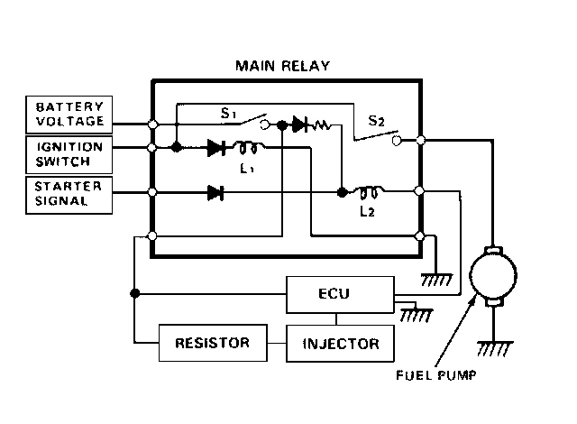

Fuel Pump Relay: Description and Operation

The fuel pump relay is actually half of the main relay. In the main relay, one relay is energized whenever the ignition is on which supplies battery voltage to the ECU, power to the injectors, and power for the fuel pump relay. The fuel pump relay is energized for 2 seconds when the ignition is switched on. When the engine is running, the fuel pump relay is energized which supplies power to the fuel pump.